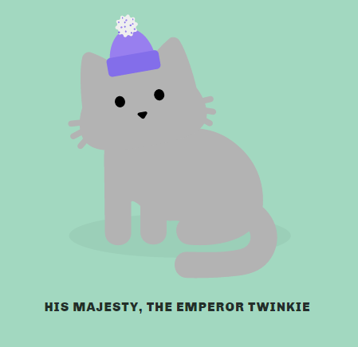
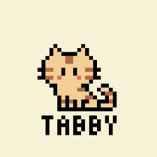
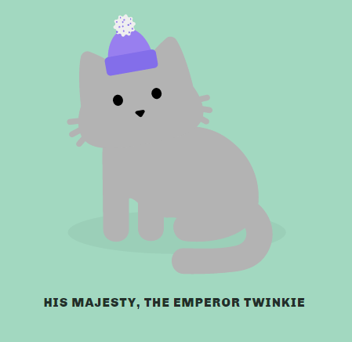
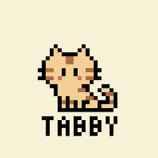

Introduction to the Wonderful Known Felines Called the "Tabby Cats"
This website will go in depth the Tabby Cat discussing many broad topics and analysis solely based on the "Tabby Cat"
Tabby Cat Lovers Only No Hating Allowed
 



Joining the Tabby Cat Club
"Did you know that tabby cats are not a breed, but a pattern of markings on their fur? Or that they have a distinctive letter M on their forehead? Or that they come in a variety of colors and personalities?"
If you want to learn more about these amazing felines and learn interesting facts like the one above, you're in the right place. Our website is dedicated to providing you with the most comprehensive and up-to-date information about tabby cats. You'll find articles, videos, quizzes, and more to satisfy your curiosity and love for tabby cats.
But wait, there's more! As a member of our website, you'll get access to exclusive content and benefits that are not available to the public. You'll be able to:
Join our online community of tabby cat lovers and share your stories, photos, and questions.
Get personalized advice and tips from our experts and veterinarians.
Receive discounts and offers from our partners and sponsors.
And much more!
So what are you waiting for? Become a member today and join the ultimate tabby cat club. It's easy, fast, and affordable. Just click the button below and fill out a simple form. You'll be glad you did!
Become a Member Now